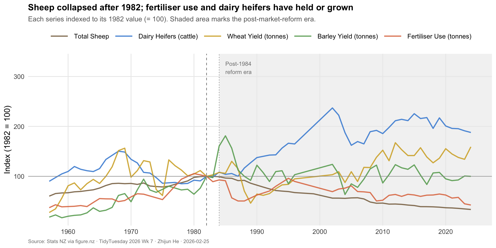
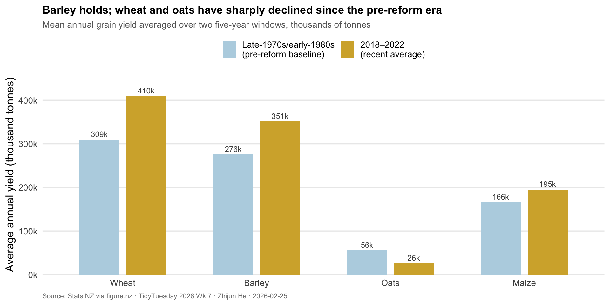

The Pastoral Pivot
TidyTuesday 2026 · Week 7 · Agricultural Production Statistics in New Zealand
Background
New Zealand’s pastoral identity is inseparable from the image of its hillsides white with sheep. For much of the twentieth century, wool and lamb exports underpinned the national economy, and by 1982 the country grazed nearly 70 million sheep—roughly 22 for every person alive. That ratio has since collapsed: today there are about 4.5 sheep per person. Yet New Zealand’s farms remain as productive as ever. The question is not whether the countryside changed, but what replaced the sheep.
This 90-year statistical record from Stats NZ captures the breadth of that transition: livestock counts, crop yields, fertiliser use, and the total area under farm management. Together, these series trace not merely a decline in one sector but an entire agricultural reorientation—from extensive wool-and-lamb production toward dairy intensification and higher-value cropping.
Motivation & Research Question
The sheep narrative is well-known, but it risks framing New Zealand’s agricultural history as a story of loss. A richer reading asks: After the sheep-farming peak of 1982, which sectors contracted and which expanded—and does the data reveal a coherent “pastoral pivot” toward a new agricultural model?
Data Preparation
Show code
# Focal measures chosen for coverage across most of the 90-year span
focal <- c(
"Total Sheep",
"Rising 1 Year Old Dairy Heifers and Heifer Calves",
"Wheat (yield)",
"Barley (yield)",
"Total All Fertilisers"
)
labels_clean <- c(
"Total Sheep" = "Total Sheep",
"Rising 1 Year Old Dairy Heifers and Heifer Calves" = "Dairy Heifers (cattle)",
"Wheat (yield)" = "Wheat Yield (tonnes)",
"Barley (yield)" = "Barley Yield (tonnes)",
"Total All Fertilisers" = "Fertiliser Use (tonnes)"
)
ds_clean <- dataset |>
filter(measure %in% focal) |>
mutate(
measure_label = recode(measure, !!!labels_clean),
measure_label = factor(
measure_label,
levels = c(
"Total Sheep",
"Dairy Heifers (cattle)",
"Wheat Yield (tonnes)",
"Barley Yield (tonnes)",
"Fertiliser Use (tonnes)"
)
)
)
# Index each series to its value at 1982 (sheep peak year)
ds_indexed <- ds_clean |>
group_by(measure_label) |>
filter(!is.na(value)) |>
mutate(
base_value = value[year_ended_june == 1982],
index = value / base_value * 100
) |>
ungroup()
cat("Years spanned:", min(ds_clean$year_ended_june), "–",
max(ds_clean$year_ended_june), "\n")Years spanned: 1935 – 2024 Measures in analysis: 5 Visualization 1: The Pastoral Pivot — All Sectors Indexed to 1982
Show code
palette <- c(
"Total Sheep" = "#8B7355",
"Dairy Heifers (cattle)" = "#4a90d9",
"Wheat Yield (tonnes)" = "#d4af37",
"Barley Yield (tonnes)" = "#6aaa64",
"Fertiliser Use (tonnes)"= "#e07b54"
)
# Key annotation points
annotations <- tibble(
year = c(1982, 1984),
index = c(100, 80),
label = c("1982\nSheep peak\n(70M head)", "1984\nMarket\nliberalisation"),
measure_label = c("Total Sheep", "Total Sheep")
)
ggplot(
ds_indexed |> filter(year_ended_june >= 1957),
aes(x = year_ended_june, y = index, colour = measure_label)
) +
# Shade the post-reform era
annotate(
"rect", xmin = 1984, xmax = Inf,
ymin = -Inf, ymax = Inf,
fill = "grey92", alpha = 0.6
) +
annotate(
"text", x = 1985, y = 330,
label = "Post-1984\nreform era",
hjust = 0, vjust = 1, size = 3.2, color = "grey50"
) +
geom_vline(xintercept = 1982, linetype = "dashed",
colour = "grey40", linewidth = 0.4) +
geom_vline(xintercept = 1984, linetype = "dotted",
colour = "grey40", linewidth = 0.4) +
geom_line(linewidth = 0.9, alpha = 0.9) +
geom_hline(yintercept = 100, linetype = "solid",
colour = "grey60", linewidth = 0.35) +
scale_colour_manual(values = palette, name = NULL) +
scale_x_continuous(breaks = seq(1960, 2025, 10)) +
scale_y_continuous(
labels = function(x) paste0(x),
name = "Index (1982 = 100)"
) +
labs(
title = "Sheep collapsed after 1982; fertiliser use and dairy heifers have held or grown",
subtitle = "Each series indexed to its 1982 value (= 100). Shaded area marks the post-market-reform era.",
x = NULL,
caption = "Source: Stats NZ via figure.nz · TidyTuesday 2026 Wk 7 · Zhijun He · 2026-02-25"
) +
theme_minimal(base_size = 13) +
theme(
plot.title = element_text(face = "bold", size = 14),
plot.subtitle = element_text(color = "grey40", size = 11),
plot.caption = element_text(color = "grey50", size = 8, hjust = 0),
legend.position = "top",
legend.key.width = unit(1.2, "cm"),
panel.grid.minor = element_blank()
)
The most striking feature of this chart is the asymmetry of the post-1984 era. New Zealand’s 1984 economic reforms (the “Rogernomics” liberalisation) ended the agricultural subsidies that had kept sheep-farming artificially profitable. Total sheep numbers dropped from 70 million in 1982 to roughly 28 million today—a fall to about 40 on this index. But fertiliser use has remained near its 1982 level, suggesting that the land itself did not become less intensively managed; it was repurposed. Dairy heifers, a proxy for the dairy sector’s herd-building, have held up considerably better than sheep, consistent with New Zealand’s well-documented turn toward milk solids for export markets. Wheat and barley yields have fluctuated with global commodity prices but show no comparable structural collapse.
Visualization 2: A Century in Two Snapshots — The Crop Mix Before and After the Pivot
Show code
# Compare grain crop yields at two anchor points: 1980 and most recent year
crop_measures <- c("Wheat (yield)", "Barley (yield)", "Oats (yield)", "Maize (yield)")
crops <- dataset |>
filter(measure %in% crop_measures) |>
mutate(
crop = str_extract(measure, "^[^(]+") |> str_trim(),
era = case_when(
year_ended_june %in% 1978:1982 ~ "Late-1970s/early-1980s\n(pre-reform baseline)",
year_ended_june %in% 2018:2022 ~ "2018–2022\n(recent average)",
TRUE ~ NA_character_
)
) |>
filter(!is.na(era)) |>
group_by(crop, era) |>
summarise(mean_value = mean(value, na.rm = TRUE), .groups = "drop") |>
mutate(
crop = factor(crop, levels = c("Wheat", "Barley", "Oats", "Maize")),
era = factor(era, levels = c(
"Late-1970s/early-1980s\n(pre-reform baseline)",
"2018–2022\n(recent average)"
))
)
ggplot(crops, aes(x = crop, y = mean_value / 1000, fill = era)) +
geom_col(position = position_dodge(width = 0.7), width = 0.6) +
geom_text(
aes(label = paste0(round(mean_value / 1000, 0), "k")),
position = position_dodge(width = 0.7),
vjust = -0.5, size = 3.2, colour = "grey30"
) +
scale_fill_manual(
values = c(
"Late-1970s/early-1980s\n(pre-reform baseline)" = "#b8d4e3",
"2018–2022\n(recent average)" = "#d4af37"
),
name = NULL
) +
scale_y_continuous(
labels = function(x) paste0(x, "k"),
expand = expansion(mult = c(0, 0.12)),
name = "Average annual yield (thousand tonnes)"
) +
labs(
title = "Barley holds; wheat and oats have sharply declined since the pre-reform era",
subtitle = "Mean annual grain yield averaged over two five-year windows, thousands of tonnes",
x = NULL,
caption = "Source: Stats NZ via figure.nz · TidyTuesday 2026 Wk 7 · Zhijun He · 2026-02-25"
) +
theme_minimal(base_size = 13) +
theme(
plot.title = element_text(face = "bold", size = 13),
plot.subtitle = element_text(color = "grey40", size = 10.5),
plot.caption = element_text(color = "grey50", size = 8, hjust = 0),
legend.position = "top",
panel.grid.major.x = element_blank(),
panel.grid.minor = element_blank()
)
Among arable crops, the post-reform transition has been equally stark. Wheat and oats have both contracted significantly since their mid-century peaks, with wheat yields roughly halving between the late-1970s baseline and the 2018–2022 average. Barley is the notable exception, maintaining its output, consistent with its role as a feed crop for the expanding dairy sector. Maize, though small in absolute volume, has roughly held. This pattern reinforces the interpretation: the crop mix pivoted to support the animal that replaced the sheep—not a crop export economy, but dairy.
Takeaway
The data tell a coherent story of deliberate transformation rather than simple decline. New Zealand’s 1984 market liberalisation removed the subsidies propping up an overstocked sheep industry and allowed the sector to reorient toward its comparative advantage in dairy. Sheep numbers collapsed, wheat and oats retreated, but fertiliser inputs and dairy herd-building have persisted—the farms did not become less productive, they became differently productive. Ninety years of agricultural statistics reveal that the hillsides are still intensively managed; they have simply traded wool for milk solids, and lamb chops for a latte.